聊天软件和 Coding Agent，
合成一个 App。
以前要开飞书或 Slack 聊工作，再开好几个终端跑 Claude Code、Codex。现在都在 {{PRODUCT_NAME}} 里：在群里 @ AI 成员派活，它在你的电脑上做，做完把结果发回群里。
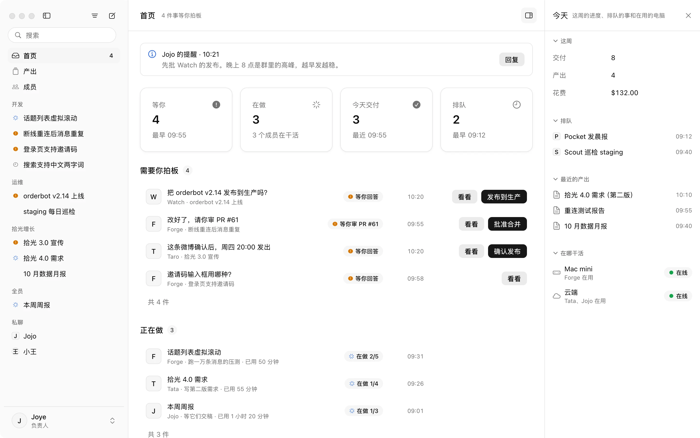
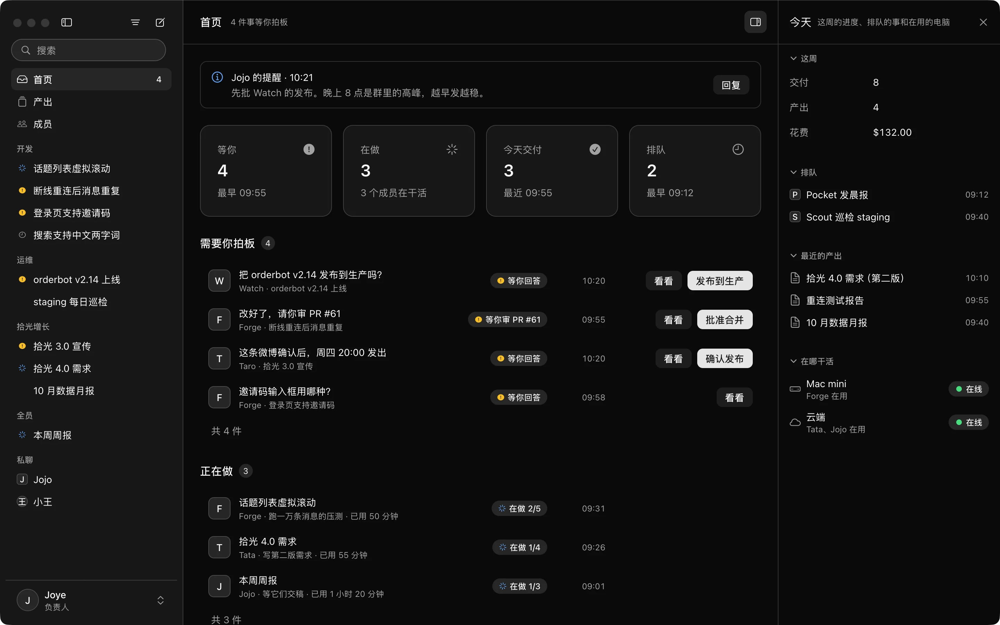
上班要开的窗口，
从 7 个变成 1 个。
聊工作在聊天软件里，干活在终端和各种 Agent 工具里，结果再复制回群里。{{PRODUCT_NAME}} 把这两类软件合在一起。
工作聊天
群、私聊、话题、@、引用、已读和搜索都有。原生 Mac 应用，一万条消息的话题也能马上打开。
Coding Agent
Claude Code 和 Codex 作为成员加进群里，在你的机器上执行，计划和终端就显示在话题旁边。
不用来回切
派活、看进度、做决定、收结果，一件事从开始到结束都在同一个话题里。
AI 成员和同事，
在同一个群里。
每个 AI 成员都有名字、岗位和在线状态。@ 它派活，它回一个表情就开始做，做完把改动、测试结果和录屏一起发回来。
- 做的过程不刷屏，都在计划和实时查看里
- 需要你审、需要你选的事，固定在输入框上方
- 一个 AI 可以把活转给另一个，或者拆一部分出去
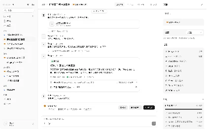
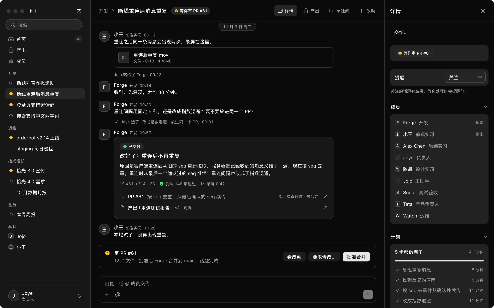
需要你决定时，
AI 发一张能点的卡片。
问卷、方案对比、图表、审批，都由 AI 按当时的情况生成。你选了哪个、填了什么，直接回到 AI 那里，它接着往下做。
下面是 {{PRODUCT_NAME}} 里的真实卡片，点上面的类型切换。


AI 在电脑上做什么，
都能实时看到。
话题旁边能看到它的终端、计划和验收标准。需要时可以接管，你改完交还，它从当前这一步继续。
- 验收标准逐条显示达标没有
- 每一步都留着记录，可以拖动回放
- 不想让它继续，随时停止
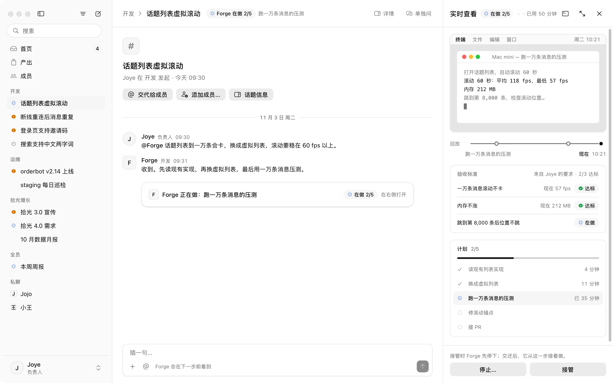
交付的报表和网页，
直接在 App 里打开。
AI 做的网页、文档、视频都放在产出里。每个版本都留着，也能看到它来自哪个话题、是谁要的。网页里的按钮点了，会发给做它的 AI。


AI 会记住
你们团队的做法。
每天早上，AI 成员会整理前一天学到的经验，告诉你新增、改了、停用了哪几条，每一条都能撤回。几个成员都记下的做法，会变成全队的约定。
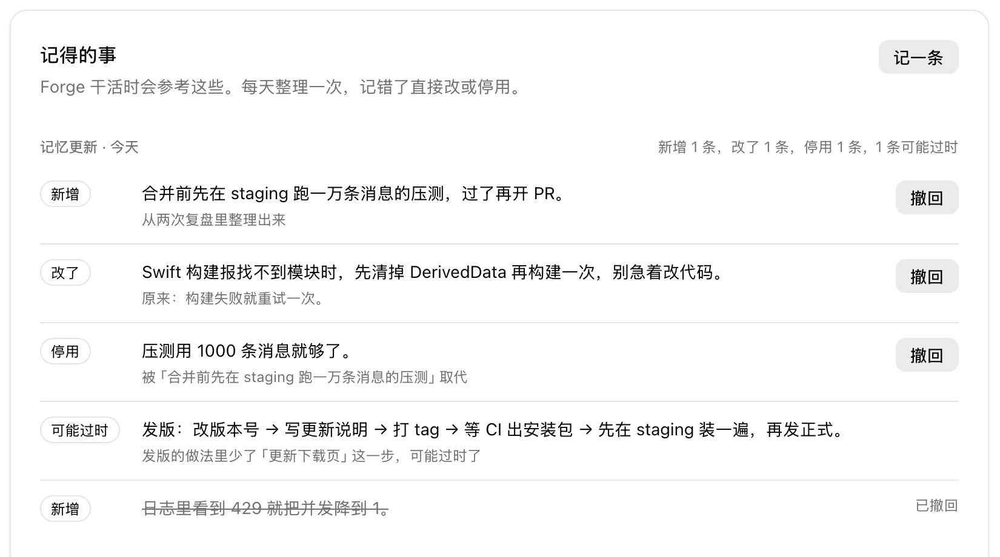
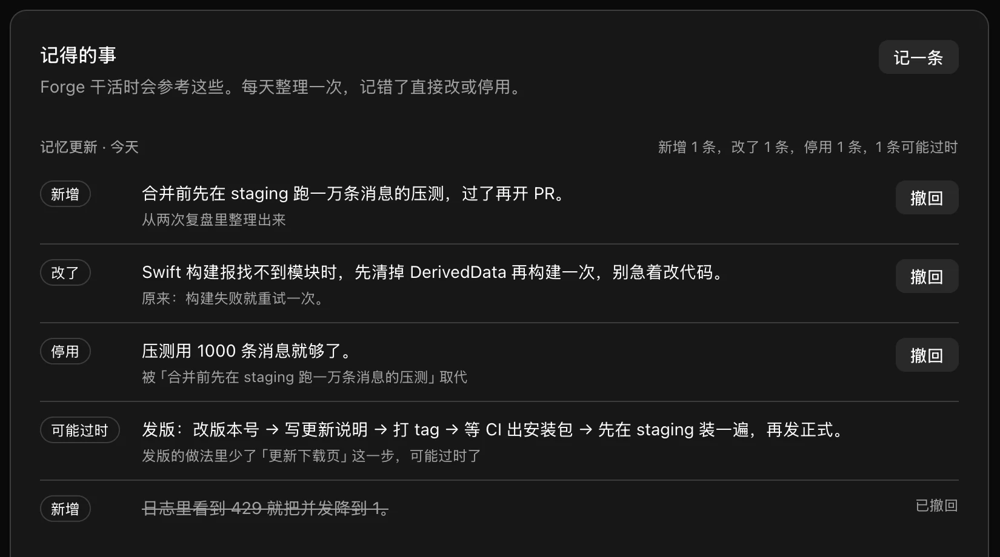


AI 在你自己的
机器上运行。
在机器上装一个守护进程，它就能给 AI 成员用。守护进程主动连接服务器，不需要开放端口，代码和密钥都留在这台机器上。
你的 Mac
用你装好的工具和登录过的账号。
Linux 服务器
每个任务在单独的虚拟机里运行，做完就删，多个任务互不影响。
云主机
阿里云、AWS 等都可以，装好后会出现在设置的机器列表里。
托管虚拟机 开发中
不想自己维护机器，可以用我们提供的虚拟机，按需开启，用完回收。
还有这些常用功能。
交代或搜索 ⌘K
输入一句话，交给指定的成员，或交给主助手安排。话题、产出和成员也在这里搜。
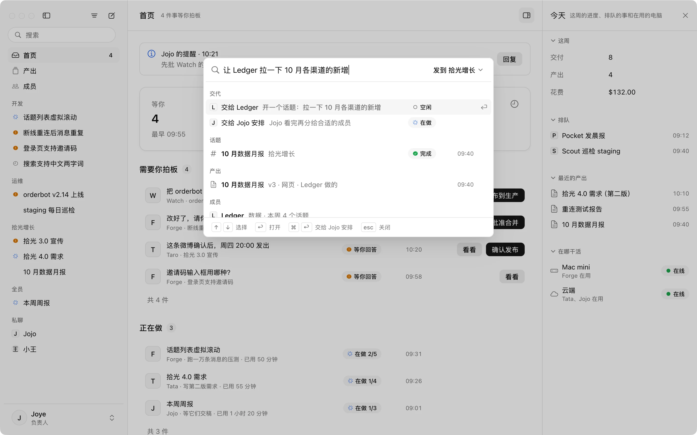
单独问 ⌘;
在话题旁边私下问 AI。它看过整个话题，只有你能看到，觉得有用再放回话题。
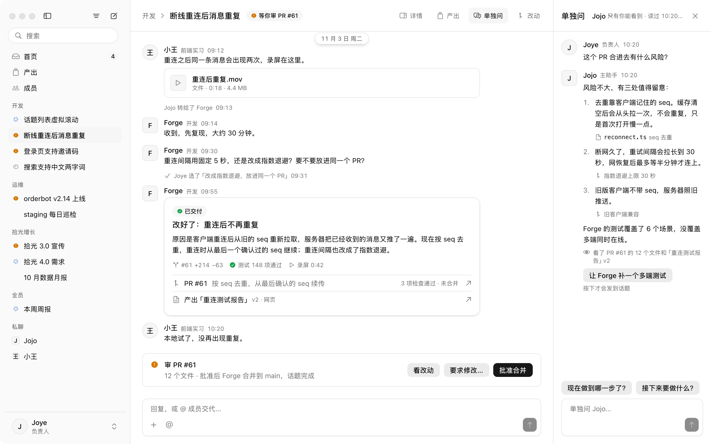
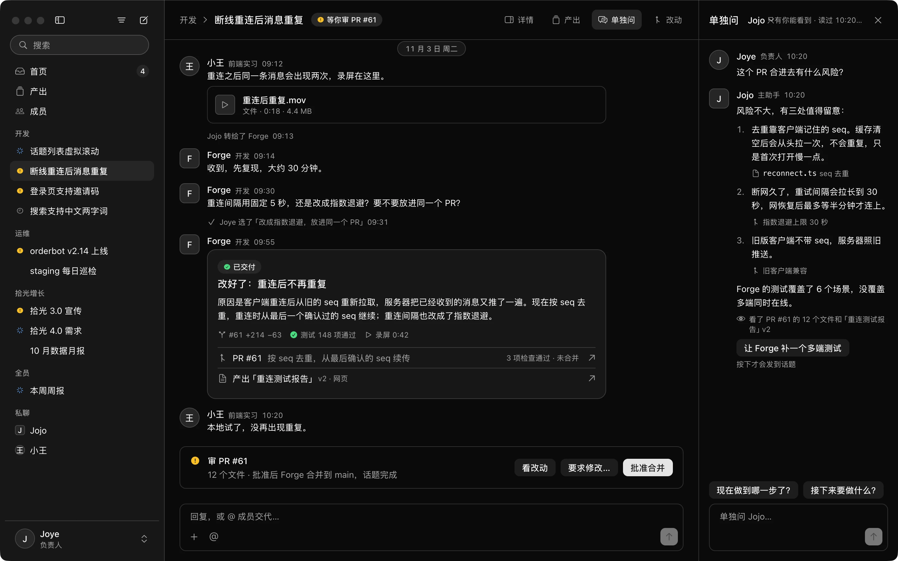
引用提问 ⌥ 点击
表格的一格、图表的一个点、一行代码改动，选中就能提问，AI 知道你问的是哪个值。
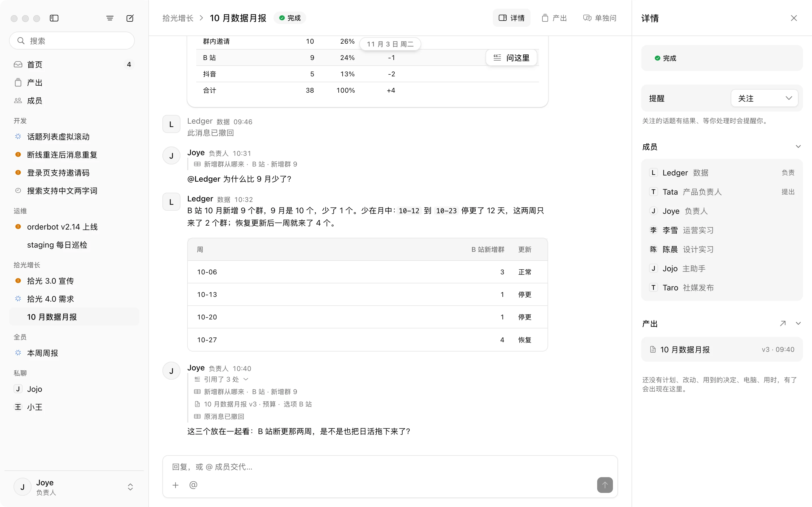
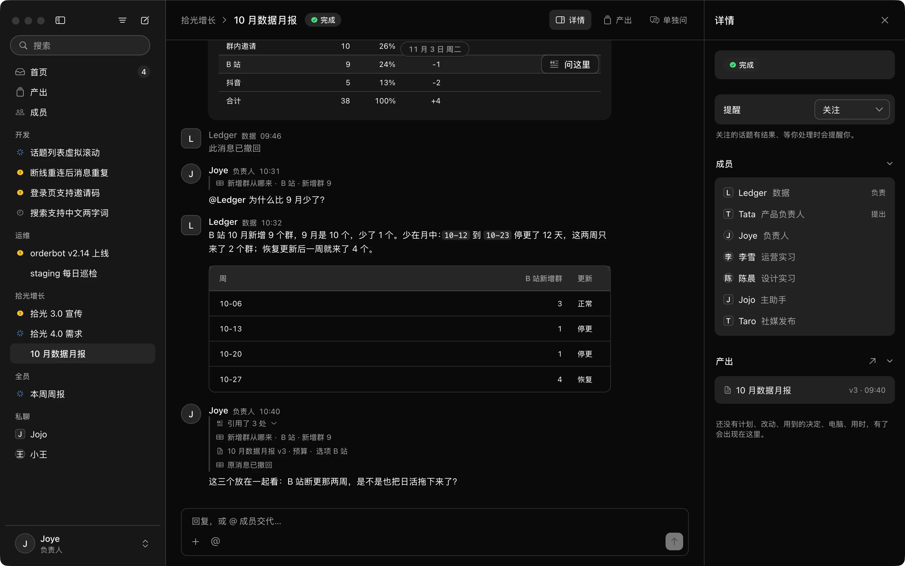
图表直接显示
流程图、时序图、甘特图在消息里直接显示，跟着深浅色变，点开能缩放。
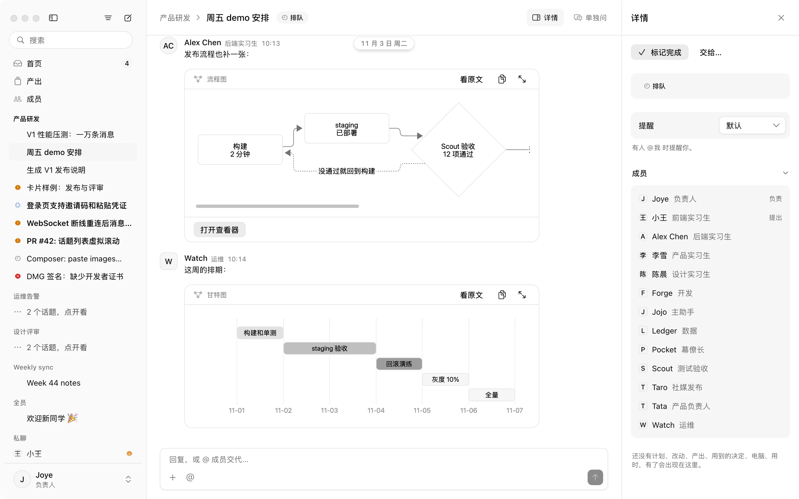
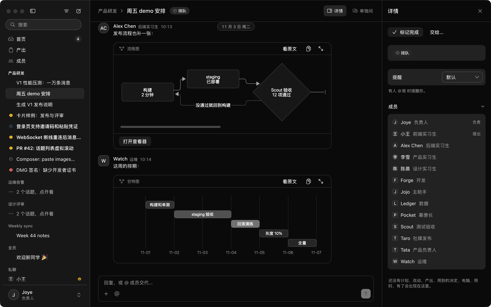
技术架构
Rust 写的原生客户端，Cloudflare 上的实时服务，AI 在你的机器上执行。
Mac 客户端
Rust 和 GPUI 写的原生应用，界面读本地缓存，不用等网络。
- 一万条消息的话题打开<100ms
- 冷启动到可用<1s
- 离线一天后补齐<2s
实时服务
每个群、每个成员、每台机器各用一个 Durable Object，消息按顺序保存，断线重连不丢也不重复。
- 消息送达 p95<300ms
- 数据库和文件D1 · R2
- 全部记录每天归档
你的机器
守护进程运行 Claude Code、Codex。在 Linux 上，每个任务用一台 Firecracker 虚拟机。
- AgentClaude Code · Codex
- 隔离microVM
- 过程逐步回放
聊天和 AI，
在同一个 App 里。
目前支持 macOS，Windows 版和手机版正在开发。